The Role of Prefrontal Cortex in Conscious Experience
Veith Weilnhammer
March 15, 2021
Outline
- Five Problems in the Scientific Study of Consciousness
- Bistable Perception and the Prefrontal Cortex
- Implications for Computational Psychiatry
- Outlook and Discussion
Conscious Experience
Nagel (1975): “(…) an organism has conscious mental states if and only if there is something that it is like to be that organism.”
Five Problems
Subjectivity
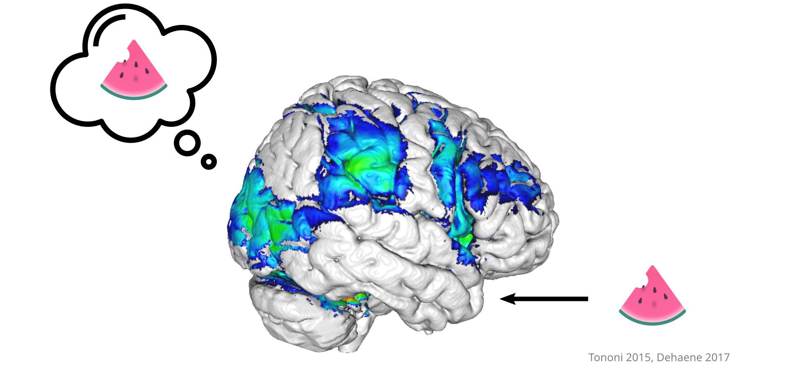
- How does subjective experience occur at all?
Neural Mechanisms
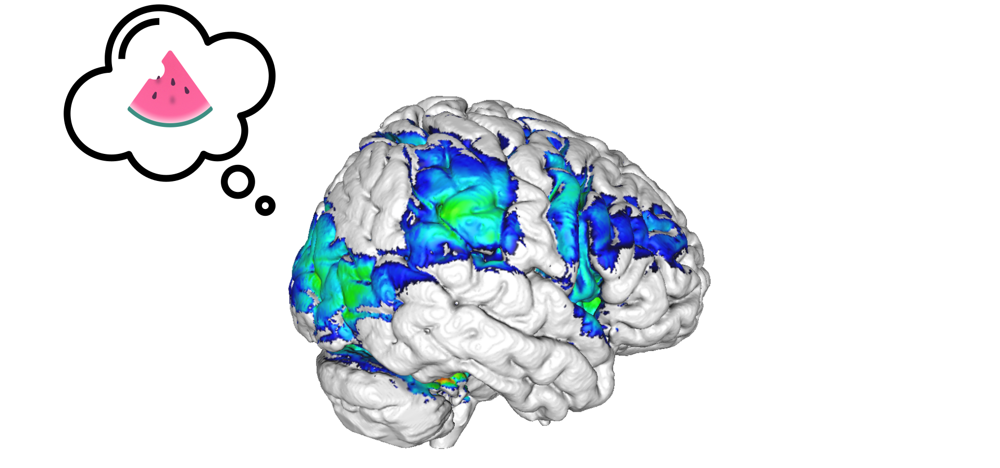
- What are the neural events that generate conscious experience?
Scale

- What is the scale at which conscious experience emerges from biological activity?
Function
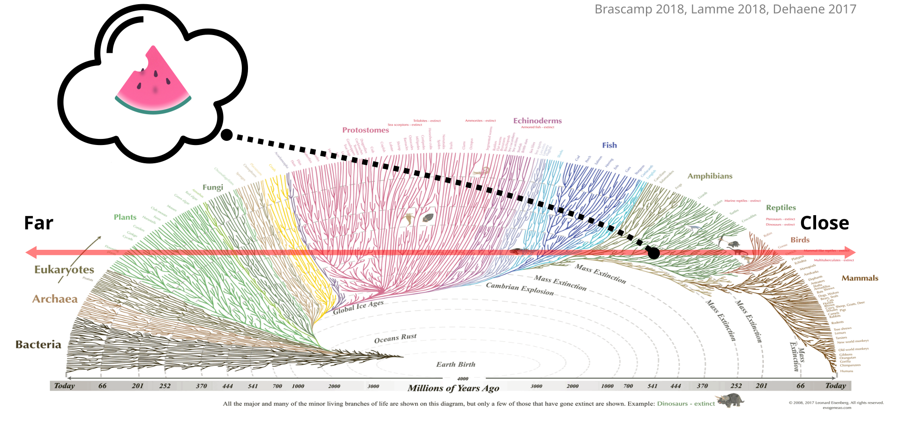
- What is the evolutionary function of conscious experience?
Detection
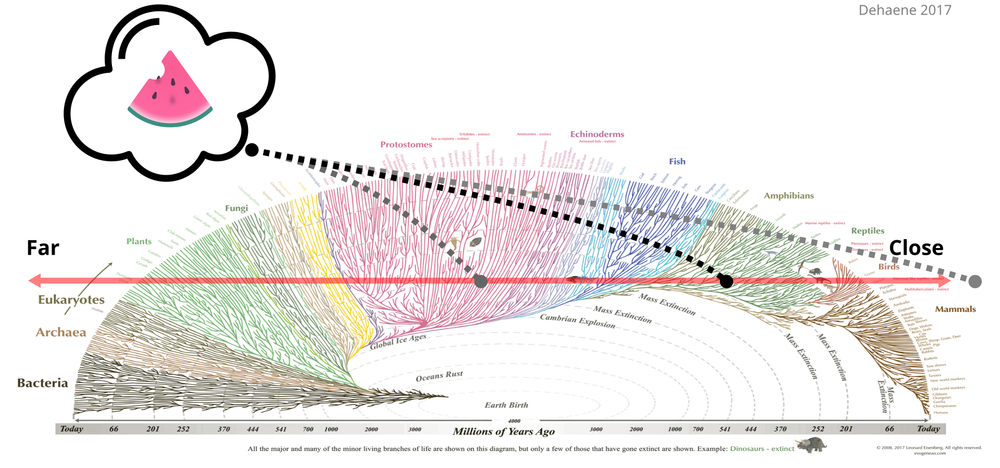
- How can we detect conscious experience outside of the human mind?
Neural Mechanisms
Where to look for
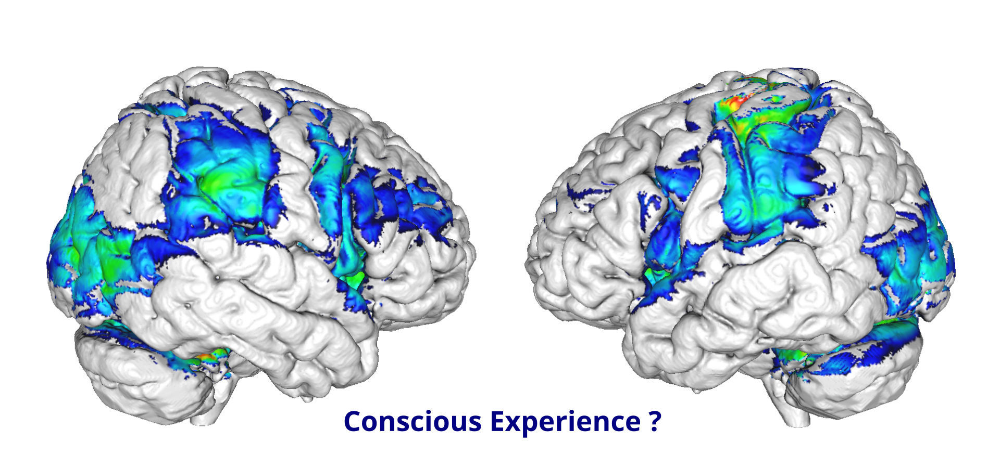
Where to look for
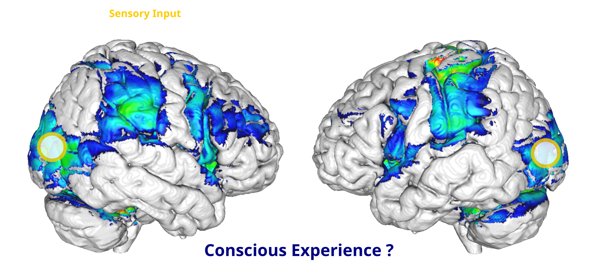
Where to look for
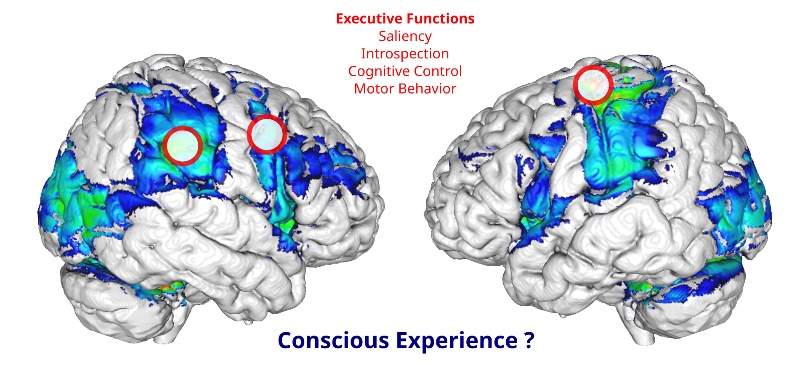
Where to look for
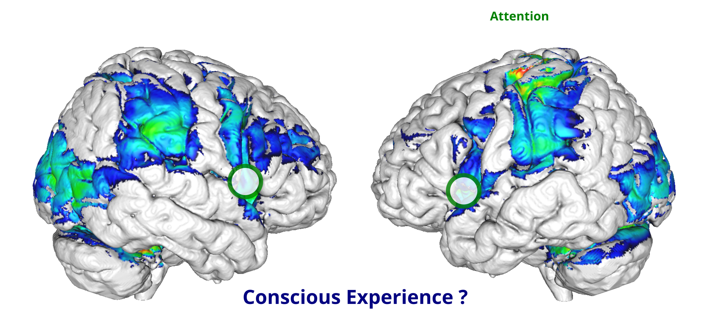
Where to look for
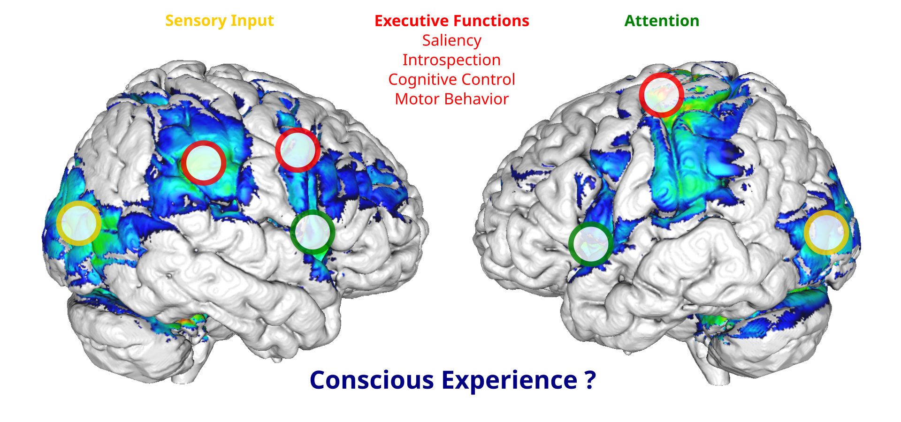
- Experimental dissociation from events occuring up- and downstream of conscious experience
Bistable Perception
Sensory Ambiguity

Experimental Dissociation
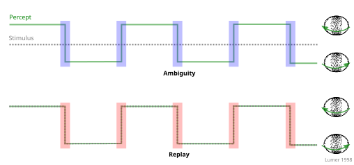
- Contrast between ambiguous and “replay” transitions
Ambiguity
Replay
Frontoparietal Cortex
Feedback Hypothesis
Feedforward Hypothesis
Hybrid Hypothesis
Predictive Coding
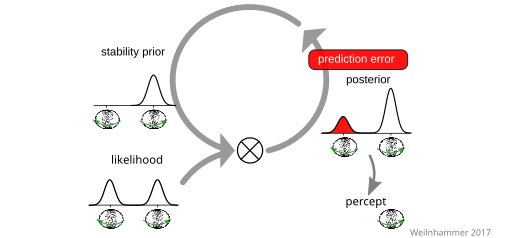
Predictive Coding
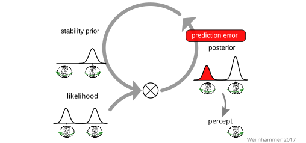
Predictive Coding
Predictive Coding
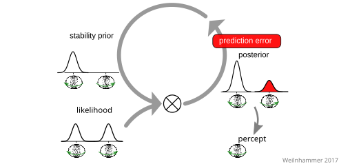
PE minimisation
PE minimisation
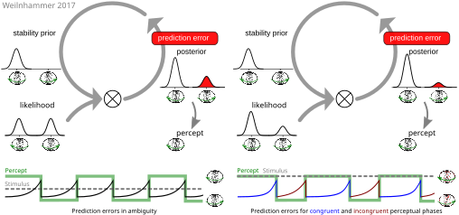
- Two fMRI experiments in 55 healthy participants
Model-based fMRI
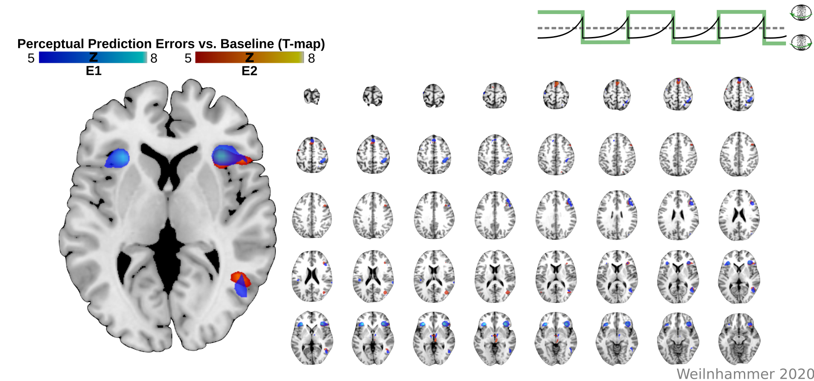
- IFC and V5/hMT+ represent PEs
Neural timecourse
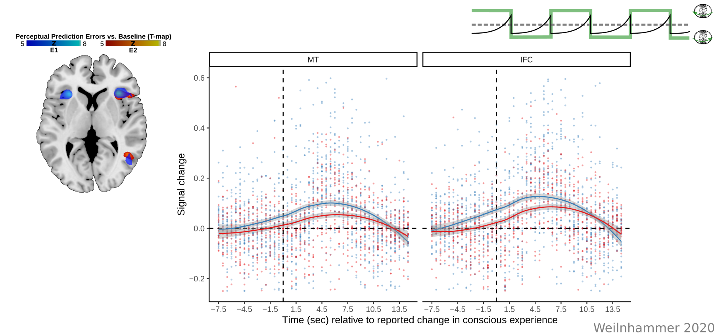
- IFC and V5/hMT+ represent PEs
Posterior Probability Maps
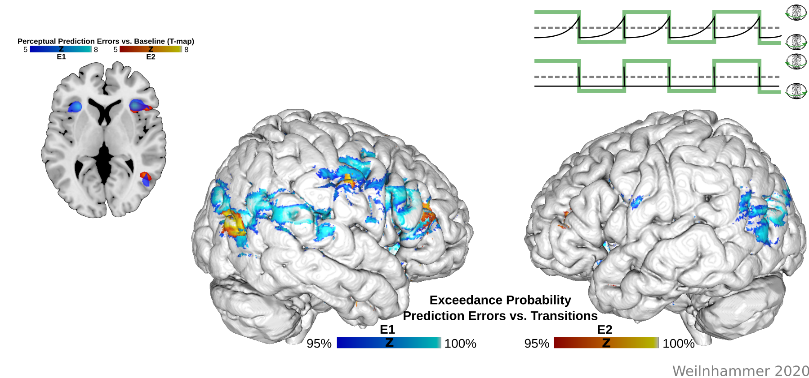
- IFC and V5/hMT+ represent PEs
Dynamic Causal Modeling
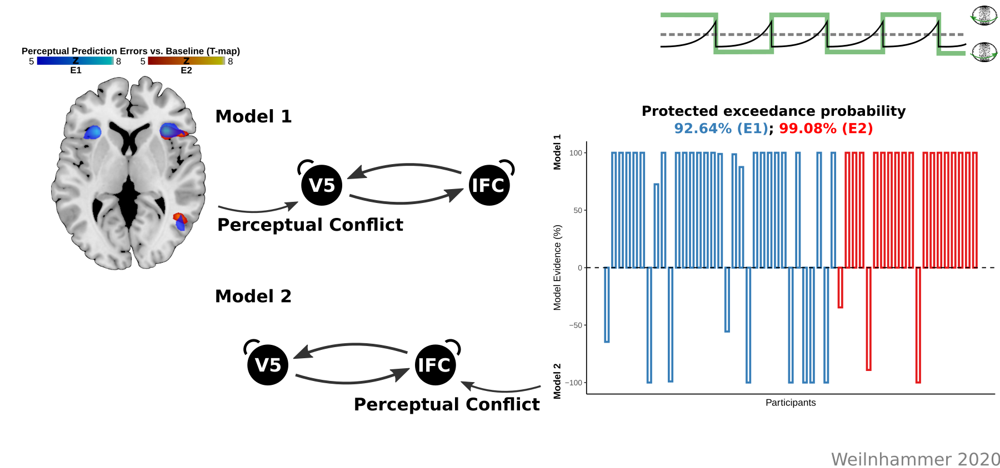
- PEs are fed forward from V5/hMT+ to IFC
Decoding
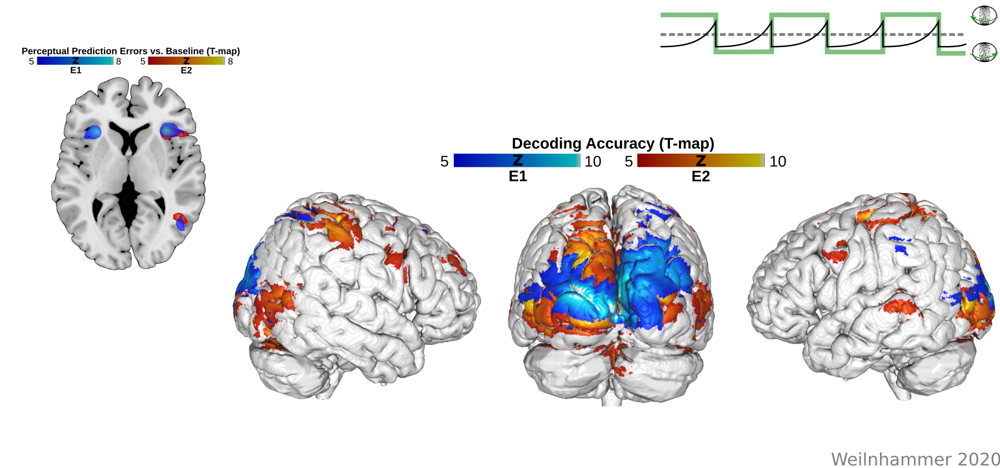
- Perceptual content can be decoded from V5/hMT+
Biased voxels in V5/hMT+
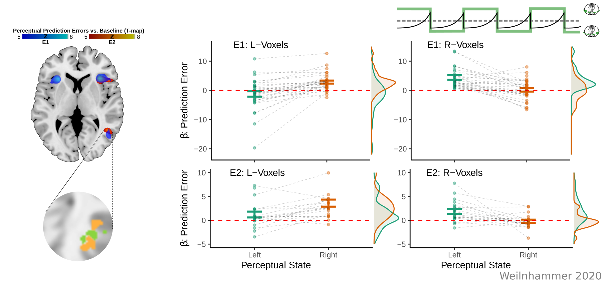
- Dissociation between perceptual content and PEs.
Feedforward Processing
Feedback Processing
Virtual Lesions
Virtual lesions
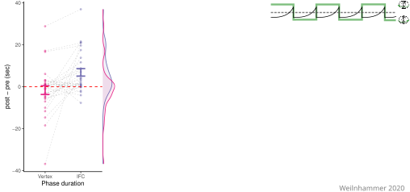
Virtual lesions
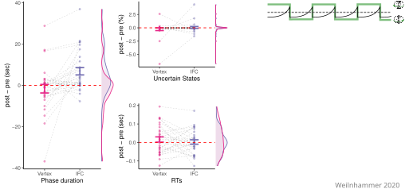
Virtual lesions
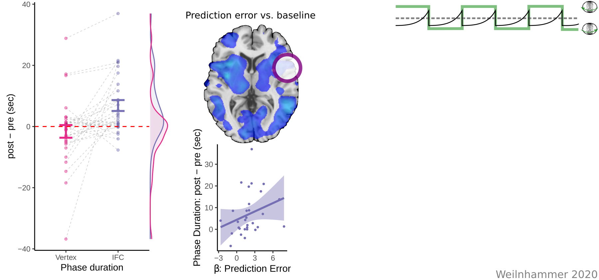
Virtual lesions
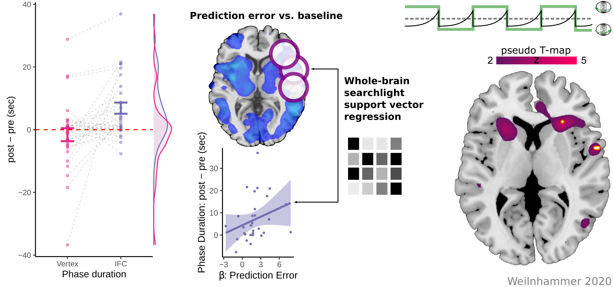
Feedback Processing
Neural Mechanisms
Computational Psychiatry
Hollow Mask Illusion
Bayesian Models of Psychosis
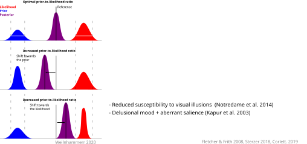
Bayesian Models of Psychosis
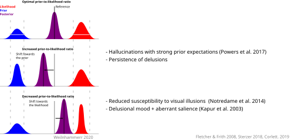
Graded Ambiguity
Graded Ambiguity
Simulation
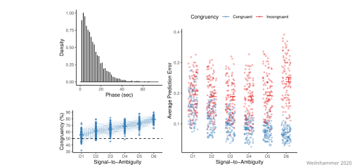
- 23 patients (paranoid schizophrenia) & matched controls.
- Matching: Age, Gender, handedness, 3D-vision.
Group-level inference
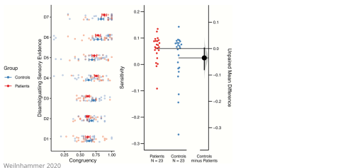
- Group x Disambiguation - Interaction: F(6) = 2.52, p = 0.02
- Higher sensitivity in patients
Group-level inference
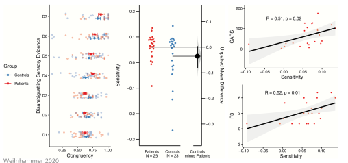
- Sensitivity ~ perceptual anomalies (CAPS) and hallucinations (PANSS-P3)
Group-level inference
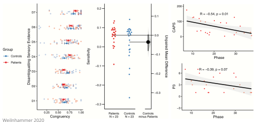
- 1/Phase ~ perceptual anomalies (CAPS) and hallucinations (PANSS-P3)
Prior-to-likelihood ratio
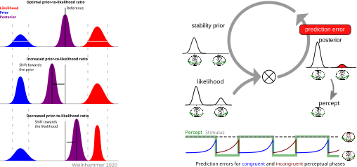
Prior-to-likelihood ratio
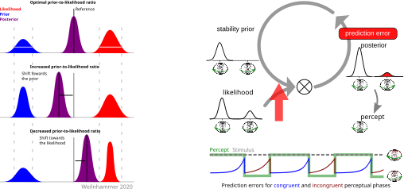
Prior-to-likelihood ratio
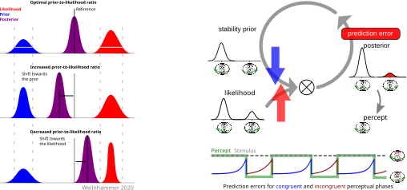
- Sensitivity to perceptual conflicts ~ hallucinations
Outlook
Altered states of consciousness

Altered states of consciousness
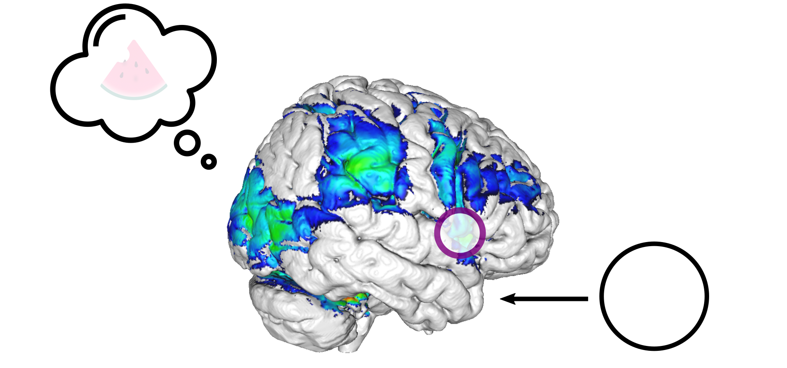
- Treating hallucinations with non-invasive brain stimulation in IFC?